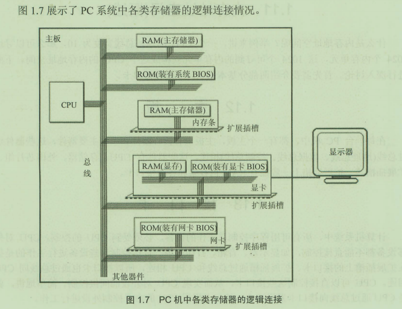

8086汇编笔记
这篇文章是在我还不懂Markdown的时候写的，排版很乱。而且水平也很菜，只是因为内容很多舍不得删，留作纪念。
8086汇编，王爽的《汇编语言（第三版）》阅读笔记。
代码片段示例
修改FL寄存器
pushf ;FL入栈
pop ax ;AX=FL
or ax,100h ;
push ax ;AX入栈
popf ;FL=AX
循环四次
mov cx,4
loop:
...
sub cx,1
jne loop
函数
functionname proc near
;(word arg1 4,word arg2 6)
push bp
mov bp,sp ;bp栈帧,方便参数的调用.构造堆栈框架(stack frame)
push another register ;保护寄存器
sub sp,16 ;比如，我要开辟16个字节给临时变量（比如16个char）
[bp+4] ;使用传入的参数
[bp-8] ;使用开辟的变量
add sp,16 ;释放我为临时变量开辟的的空间
pop another register ;恢复寄存器
mov sp,bp
pop bp ;恢复bp
ret
functionname endp
这里并没有开辟局部变量，其实还少了。为什么这里不用恢复esp呢，因为没有给内存开辟位置，pop完就回去了。CSAPP这一部分讲的也很好。 调用:
mov ax,...
push ax
mov ax,...
push ax ;参数压栈,从右到左,上次作业写反了.便于可变参数函数的实现
call functionname
add sp,4 ;栈指针回归,相当于出栈了
地址的引用
data segment
abc db 1,2,3,4
xyz bw 1234h,5678h,9ABCh ;内存真实情况：34h,12h,78h,56h
data ends
code segment
assume ds:data cs:code ;这个也是伪指令，让编译器在缺省是自动填充
main:
mov ax,data
mov ds,ax ;开头先把段寄存器定义好了
;引用abc的元素2
mov ah,abc[1] ;\直接引用
mov ah,[abc+1] ;/
;引用xyz的元素5678h
mov bx, offset xyz ;首地址
mov ah,[bx+2] ;为啥+2？注意汇编语言是很老实的，+1就是地址+1,C语言中指针+1是和类型有关的
;引用abc的元素2
mov bx,1 ;下标
mov ah,abc[bx] ;\
mov ah,[abc+bx] ;/
;引用abc的元素2
mov bx,offset abc ;首地址
mov si,1 ;下标
mov ah,[bx+si] ;
屏幕控制
在dos中可以直接控制硬件，现在的操作系统都是会保护的
-
文本模式：text mode
;调用int 10中断，将显卡切换到文本模式（默认）： mov ah,0 mov al,3h int 10h ;80×25 显示文字（ASCII字符）：mov ax,0b800h ;显存对应的地址 mov es,ax mov byte ptr es:[0],'A' ;想要显示的字符 mov byte ptr es:[1],70h ;7->白色背景 0->黑色前景 ;一般的对于(x,y)坐标，偏移地址=(y×80+x)×2 -
图形模式：graphic mode
;调用int 10中断，将显卡切换到图形模式： mov ah,0 mov al,13h int 10h ;320×200分辨率,256色 mov ax,0A000h ;显存对应的地址 mov es,ax mov byte ptr es:[0],4 ;在（0,0）画一个红点
空循环
mov bx, 200h
wait_wait:
mov dx, 0
wait_a_while:
sub dx, 1
jnz wait_a_while
sub bx, 1
jnz wait_wait
对齐
data segment
......
date ends
;当程序刚开始运行运行时，DOS会分配psp内存。psp段长度为100h，位置在程序的首段前。psp存放了关于程序的一些有用信息，比如命令行参数在psp:80h。
;DOS会把自动ds与es赋值为psp段址（program segment prefix）
;再赋值ss:sp=堆栈地址：堆栈长度 ;如果程序没有定义堆栈段，操作系统默认赋值 ss=程序首段的段地址，sp=0（最长）
;再赋值cs:ip=代码段地址：main的偏移地址
;对齐：如果data（前一个）段后的地址不能成为段地址（地址的末位非0），那么code（后一个）段会对齐到下一个能成为段地址的地址，中间用0填充
code segment
......
code ends
stk segment stack
db 200h dup(0)
stk ends ;定义堆栈段
;操作系统会自动把ss赋值为stk,sp赋值为栈长度
;不要在堆栈段定义数据，操作系统不保证栈指针之前（上？）的数据完好。
字母转大写
and byte ptr [si],0dfh ;因为大写字母和小写字母就差了一个位
修改中断函数
assume cs:code
code segment
start: mov ax,cx
mov ds,ax
mov si,offset do0 ;设置ds:si指向源地址
mov ax,0
mov es,ax
mov di,200h ;es:di指向目标写地址
mov cx,offset do0end-offset do0 ;写长度，常量算数表达式
loop1:
mov ax,ds:[si]
mov es:[di],ax
add si,1
add di,1
sub cx
ja loop1
mov ax,0
mov es,ax
mov word ptr es:[0*4],200h
mov word ptr es:[0*4+2],0h ;设置中断表
;这一段，称为安装过程，把中断代码写到内存，首地址写到中断表
mov ax,4c00h
int 21h
do0: jmp short do0start
str db "overflow" ;把数据和代码混在同一个段的技巧
do0start:
mov ax,cs
mov ds,ax
mov si,202h ;设置ds:si指向安装后的字符串首
mov ax,0b800h
mov es,ax
mov di,0 ;设置es:di指向显存映射的地址
mov cx,9 ;字符串长度
s: mov al,ds:[si]
mov es:[di],al
add si,1
add di,2 ;回忆显存映射，两个字节什么意思
sub cx,1
ja s
mov ax,4c00hh
int 21h
do0end: nop
code ends
end start
短跳的反向跳跃
je not_equal
jmp euqal ;所有的条件跳转都是短跳，无条件跳转编译器会帮你决定
not_equal:
... 中间距离太长,短跳跳不到
equal:
寄存器参考
-
通用寄存器ax,bx,cx,dx ;这个是有高8位和低8位的，高位ah,低位al (针对通用寄存器)
-
地址寄存器bx,bp,si,di ;除了Si，其他3个也可以参加计算
-
段寄存器 cs,ds,ss,es （通过寄存器赋值）
- cs : code segment
- ds : data segment （决定了要读取内存的段地址
ds:[addr];我们只能通过寄存器给ds赋值） - ss : stack segment （ss&si 栈指针）
- es : extra segment
-
IP和CS配合使用，决定了当前要读取指令的地址，
-
FL标志寄存器。flag是按照位起作用的，mov指令不影响任何标志位。inc,dec也不会。
| 位数 | 名称 | 意义 | 备注 |
|---|---|---|---|
| 第0位 | CF：进位标志 | 执行结果若向（虚空最高位）进位，CF置1：如97H-98H 位移运算会把移出来的存到CF，加法进位/减法借位会让CF置1,位移运算移出来的位也会改变CF 其实CF就是无符号数的溢出，对有符号数意义不大 | jc:jump if c jnc:jump if not CF jc和jb等价 adc ah,0:AH=AH+0+CF add_with_carry clc:clear carry flag stc:set carry flag cmc:complement carry flag(取反) |
| 第2位 | PF：奇偶标志 | 结果的低8bit 中1的个数，若为偶数，PF置1 | jp 或 jpe (even) ; jnp,jpo (odd) ; 用于早期通讯的奇偶校验 |
| 第4位 | AF：辅助进位标志auxiliary flag | 低4位是否向高4位进位或借位,和BCD码(Binary Coded Decimal)有关 | 19h ==> 00010011，而BCD的19 0001 1001 +1 0001 1010 = 1A 。但实际上我想要20(0010 0000),要调整，+6 ;daa:decimal adjust for add 因为BCD码加减的时候会出现错误，所以需要调整。只针对AL寄存器中的值进行调整。 aaa:ascii adjust for add |
| 第6位 | ZF：零标志位 | ;执行相关指令的结果，若为0，ZF置1 | jz:jump if zero ; jnz:jump if not zero je和jz完全等价 |
| 第7位 | SF：符号标志 | ;执行结果中若结果为负（补码而言），SF置1。跟随运算结果的最高位（符号位） | ;js:jumo if signflag（负） jns: |
| 第8位 | TF：跟踪标志，陷阱标志(Trace/Trap Flag) | 若TF为1，CPU在执行完指令后会调用单步中断的中断处理程序int 1h | |
| 第9位 | IF： | 当CPU检测到可屏蔽的中断信息时，如果IF=1，CPU在执行完当前指令后响应中断；如果IF=0，则不响应可屏蔽中断 | IF=1允许硬件中断，允许计算机硬件向CPU发出中断请求。硬件中断一定是由某一个事件触发的，如用户敲键盘、时钟中断，而不是程序员写int指令实现的。 cli:让IF=0，禁止中断，sti:让IF=1，允许中断 |
| 第11位 | OF：溢出标志 | ;执行结果超出数据范围（最高位）（有符号数而言），OF置1 | OF对无符号数意义不大 正+正=负、负+负=正，称为溢出；正负相加不会溢出。 ;jo:jump if overflow jno: |
| 第10位 | DF:方向标志(Direction flag) | DF=0为正方向（低地址到高地址） | cld:让DF=0; std:让DF=1 源首地址<目标首地址，赋值按照反方向，源首地址>目标首地址，赋值按照正方向。当然，这只在地址有重叠的时候重要 |
adc ax,bx ;ax=ax+bx+CF
用以实现加法的进位
sbb ax,bx ;ax=ax-bx-CF
用以实现减法的借位
clc stc :clear/set CF
cli sti : clear/set IF
cld std : clear/set DF
- memory 地址寄存器register： bx,bp,si,di表示地址 8086寻址模式：地址=段地址*16+偏移地址 逻辑地址： 1000h:0ffffh ，物理地址：1ffffh。 显然，一个逻辑地址对应一个物理地址，但是一个物理地址可以对应多个逻辑地址。
ds:[bx].idata[si/di]
ss:[bp].idata[si/di] ;寻址组合方式，段地址不能用常数表示
bp默认和ss对应，这就是栈
偏移地址可以用常数表示，称为直接寻址 偏移地址可以用上述四个寄存器表示 register/ b?+?i / b?+?i+idata，称为间接寻址 在没有寄存器确定操作内存单元大小时，要显示指明： mov word ptr ds:[0],1 inc byte ptr [bx] 段跨越：通过在操作数钱添加一个段前缀（segment prefix），如cs:[bx]，强制改变操作数的段地址，否则的话bp默认对应ss，其他默认是ds
- “开辟”内存，这些都是伪指令，给编译器用的。
db define byte 1byte char， 例：length db 10h
dw define word 2byte
dd define double 4byte float,int
dq define quad word 8byte double/__int64(long long int) %I64d
dt define ten byte 10byte long double %Lf
dup 重复定义 如：db 10 dup {0}
-
小端规则little endian(Intel) 低地址存低位 任何指令的源操作数和目标操作数的宽度一定一样。常数是没有宽度的。
-
ptr byte ptr 1字节 word ptr 2字节 dword ptr 4字节 fword ptr 48bit 16bit段地址+32bit偏移地址 qword ptr 8word tword ptr 10word
near ptr 近，当前指令和目标地址在同一个段内 far ptr 远，跨段跳 一般和jump，call连用，这两个修饰标号
指令参考
计算指令
加减法指令
add，sub 不能地址+地址
inc ax ;++指令，比add快,而且不会影响CF寄存器
adc ax,bx ;带进位加ax=ax+bx+CF
dec ax ;--不影响CF寄存器
sbb ax,bx ;带借位减ax=ax-bx-CF
neg ax ;求相反数,会影响CF,ZF,SF等标志位,ax=0-ax
cmp ax,bx ;只改变标志位的sub
idiv符号除法，div除法指令
div bl ;16bit/8bit 商在AL，余数在AH，被除数默认在AX
div word ptr ds:[bx] ;32bit/16bit 商在AX，余数在DX，被除数默认在DX:AX
;在80386下，还可以64bit/32bit：
div ax ;商在EAX，余数在EDX，被除数默认在EDX:EAX
imul符号乘法，mul乘法指令
mul bl ;8bit*8bit 结果在AX，另一个乘数默认在AL
mul word ptr ds:[bx] ;16bit*16bit 结果在DX:AX，另一个乘数默认在AX
;在80386下，还可以32bit*32bit：
mul ecx ;结果在EDX:EAX，另一个乘数默认在EAX
位运算指令
在8086中，位移数大于1需要通过寄存器cl；在80386中没有这个限制
and & 使得1位不变，0位变0
or | 使得0位不变，1位变1
xor ^ xor ax,bx 使得0位不变，1位取反
not ~ not ax
shl << 逻辑左移 shl ax,1
shr >> 逻辑右移
rol _rotl() 循环左移 rol ax,cl x<<n | x>> sizeof(x)*8-n
ror _rotr() 循环右移
sal 算数左移,算数左移和逻辑左移是等价的
sar 算数右移
rcl 带进位循环左移
rcr 带进位循环右移
test 和and一样，但是丢弃结果
转移指令
- 无条件跳转 jmp
jmp short flag ;转移范围在127 短跳,跳跃距离只有一个字节.故指令一共四位
;所有的条件跳转都是短跳,所以可能会出现跳不到的情况.可以用反向跳跃
jmp near ptr flag ;转移范围在32767 近跳,跳跃距离两个字节,后面除了跟标号还可以跟16bit寄存器或16bit变量
jmp reg //IP=reg 16bit
jmp word ptr ds:[0] //IP
jmp far ptr flag ;远跳,jmp 段地址:偏移地址,是直接寻址了不是相对了
;jmp dword ptr/32 bit 变量,同样也是直接寻址.
;但是jmp 1234:5678 常数跳转直接这样写会报错要用机器编码
;db ea ;long jmp的机器码
;dw 1234h
;dw 5678h
;标号跳转,不需要加标号,编译器会自动判断.
jmp dword ptr ds:[0] //CS高地址 IP低地址
- loop flag ;和下面的代码等效
cx--; if (cx!=0) goto flag; - 条件跳转(都是短跳)
ja jb jae jbe 针对非符号数比较的跳转 根据CF判断(ZF)
jg,jl,jge,jle 针对符号数比较的跳转 根据
SF==OF判断(ZF)（jl SF!=OF） je jne jz jnz 判断是否相等（je和jz等价） jc jnc 根据CF判断，换句话说jc和jb等价 js jns 根据SF判断，js就是说如果是负数就跳转，不知有什么用 jo jno 根据OF判断，jo就是说如果溢出就跳转，不知有什么用 jcxz 根据CX（不是标志寄存器哦）判断，如果cx==0就跳转。多半和循环配合使用。 格式: jxxx flag 调用指令： int 中断 iret 中断的返回（详见后面的中断部分）
call dest 近调用，需要压入偏移地址
call flag ;push ip;jmp short ptr flag
call word ptr ds:[dx] ;push ip;jmp short ptr ds:[dx]
call reg ;感觉这个有函数指针的味了
ret/retn //pop ip，近返回 ret/retn count //pop ip,SP+=count，用于被调用者清理参数的情况。
call dest 远调用，需要压入完整的位置 push CS,push IP,CS:IP = dest
call far ptr flag ;push cs;push ip;jmp far ptr flag
call dword ptr ds:[dx] ;低位存低地址，高位存高地址
retf //pop ip，pop cs，远返回
和栈有关的指令
push 压栈
push 后面只可以跟一个16位的寄存器或者word ptr的内存地址
sp=sp-2;
ss:[sp]=word ptr source;
pop出栈
desti=word ptr ss:[sp];
sp=sp+2;
pushf 把标志寄存器压栈 popf 把标志寄存器出栈,不可以pop FL
注意 push FL,IP 错误,任何指令都不可以 直接引用 这两个寄存器 注意 pop FL,IP,CS 错误,CS不能 直接修改
8086 push/pop后面可以跟16位的寄存器和变量。 80386 push/pop后面可以跟32位的寄存器，变量，常数。上面变成±4
地址传送指令
- 取地址LEA最常用 格式 lea reg,mem
lea dx,ds:[1000h] <=> mov dx,1000h
lea dx,abc <=> mov dx,offset abc
lea dx,ds:[bx+si+3] <=> dx=bx+si+3,简化加法运算,是mov不可取代的.
lea eax,[eax+eax*4] <=> eax=eax*5,简化乘法运算
- lds和les 格式 lds reg,mem
les si,[] ;从内存中读出远指针地址存放到 es:si，同下咯
lds di,es:[1000h] ;从内存中读出远指针地址存放到 ds:di。就是
;mov di , word ptr es:[1000h]
;mov ds, word ptr es:[1002h] ,意会一下，不可以对ds这么操作。
les edi,[] ;从内存中读出48位远指针(16:32)存放到es:edi
- LAHF,SAHF,PUSHF,POPF，标志寄存器传送指令
lahf ;Load AH with Flags，把FL的低8位装到AH。
sahf ;Store AH in Flags，把AH存入FL的低八位。
pushf ;把FL压入堆栈，这就不止8位了。
popf
其他指令
-
xchg ax,bx 交换ax,bx的值.
-
符号扩充指令 和idiv指令配合。没有操作数 cbw 把AL扩充成AX convert byte to word cwd 把AX扩充成DX:AX convert word to dword cdq 把EAX扩充成EDX:EAX convert dword to qword
-
扩充指令 mov by zero extention & mov by sign extension movzx ax,al <=> mov ah,0 movzx ax,bl ;零扩充 movsx eax,al ;符号扩充 上面那三个指令相形见绌
换码指令:xlat (translate)或叫查表指令,用法如下。没有操作数
{
char t[]="0123456789ABCDEF"
int i=10;
i=t[i];
} //C语言代码，翻译如下
mov ax,seg t
mov ds,ax
mov bx,offset t ;让ds:bx指向表t首地址
mov al,10 ;al为下标
xlat ;al=ds:[bx+al]
in,out 对端口进行读写
字符串指令
movs 字符串传送
cmps 字符串比较
scas 字符串扫描
stos 存入字符串
lods 从字符串取
一些前缀：
rep 重复
repe、repz 如果相等则重复
repne、repnz 如果不相等则重复
es:[di]多半被写，ds[si]多半被读
- movsb字符串传送指令(strncpy)
rep movsb ;repeat move string by byte
;相当于如下指令
again:
if (cx==0) goto done; cx规定了repeat的次数
byte ptr es:[di] = byte ptr ds:[si]
if (df == 0) ;df 方向flag,cld&std操作df
{si++; di++}
else
{si--; di--} //中间这一块是movsb
cx--;
goto again
;如果没有rep,执行一次,不改变cx
;类似的也有movsw,movsd
- cmpsb字符串比较指令
cmpsb ;比较byte ptr ds:[si]
repe cmpsb ;repe: repeat if equal,有两个循环条件
again:
if (cx==0) goto done
cmp byte ptr ds:[si], es:[di] //注意repe/repne所依据的ZF就是这一句决定的
if (df == 0) ;df 方向flag,cld&std操作df
{si++; di++;}
else
{si--; di--;}
cx--;
if (ZF == 1) goto again
done:
- stosb ;存入字符串指令 store byte，自然也有stosw--ax;stosd--eax
es:[di] = al;
if (df == 0)
di++;
else
di --;
同样的也能和rep配合使用
- lodsb ;加载al的内容
al = ds:[si]
if (df == 0)
si++;
else
si --;
一般不和rep连用... 自然也有lodsw,lodsd
- scasb 字符串扫描指令，用于在字符串中查找一个字符。
repne scasb等价于如下指令
agian:
if (cx==0) goto done;
cmp al,es:[di]; //这一句决定FL
if (df == 0)
inc di ;
else
dec di ;
cx--;
if (ZF == 0) goto again;
done:
中断
中断表的初始化由bios和dos负责填入 用户可以修改中断向量,但是保存的时候通常需要保存原来的中断向量以便让我们的代码和老代码链接起来 比如,在前面加一个判断执行自己的私货,再跳到原本的中断 hook技术:改变系统功能
在8086CPU中,中断表在0000:0000-0000:03FF,占400h个字节,保存100h个中断向量(一个4字节,远指针) int 21h是DOS系统的内核,其代码是微软写的,代码保存在磁盘上.与视频的输出有关.函数地址保存在0:84h处 int 16h,与键盘的输入有关 int 13h,与磁盘的输入输出有关 int 10h是BIOS的一部分，其代码是主板的厂家写的，代码保存在ROM中。 （1）内中断 int指令都执行了什么动作
取得中断类型码
pushf ;标志寄存器入栈
TF=0 IF=0 ;设置TF与IF位为0 ,禁止外部中断和单步中断
push CS
push IP
IP=0000h:[4*N]
CS)=0000h:[N*4+2] ;读取存放在 中断表的 中断处理程序 的入口地址
iret执行了什么动作
pop IP
pop CS
popf
中断过程：
- 保存用到的寄存器，转移控制（隐含在int）
- 处理中断
- 恢复用到的寄存器，转移控制（隐含在iret）
可屏蔽中断是CPU可以不响应的外中断，不可屏蔽中断是CPU必须响应的外中断。 中断函数要求保护每个寄存器,普通的函数只需要保护四个就可以了bx,bp,.... 常用中断
exit：
AH = 4Ch
AL = return code
int 21h
getchar：
AH = 01h
int 21h
AL = read char
putchar：
AH = 02h
DL = write char
int 21h
puts：
AH = 09h
DS:DX -> the addr of string, 以$作为字符串结尾
int 21h
gets：
AH = 10h
DS:DX -> the addr of buffer 但是buffer从第二位开始才是读入的内容，第0位是最大长度，第1位是读入长度。换行符被舍弃，回车符被读入但是不算在计数中。
int 21h
笔记(二)
8086CPU
A000-F000段均不是用户的内存空间 POST（Power On Self Test）（开机引导程序）位于ROM中，映射到F000段，可读可执行不可写。 DOS留给用户的内存空间：0000:0000-9000：FFFF 640K的空间
BIOS和DOS提供的中断例程的安装
(1)开机后，CPU加电，初始化 CS=0ffffh,IP=0,自动从FFFF:0000开始执行程序。 FFFF:0000有一段跳转指令，CPU执行该指令后，转去执行BIOS中的硬件系统检测和初始化程序。 (2)初始化程序将建立BIOS所支持的中断向量，即将BIOS提供的中断例程入口地址登记在中断向量表中。 注意，对于BIOS所提供的中断例程，只需将入口地址登记在中断向量表中即可，因为他们是固化到ROM中的程序，在内存中一直存在。 (3)硬件系统检测和初始化完成后，调用int 19h进行操作系统的引导。从此将计算机交给操作系统控制。 (4)DOS启动后，除完成其他工作外，还将它所提供的中断例程装入内存，并建立相应的中断向量。
端口port
CPU -- port -- I/O 端口编号就是端口地址，范围在[0000h,0FFFFh]。 是不是有点奇怪为什么端口号和中断表的地址重合了？因为在8086中采用了独立编址，I/O地址与存储器地址分开，采用专门指令来访问I/O。LC3采用了统一编址，I/O占用存储器地址空间，无须专门的I/O指令。 参考链接  约定的，60h与键盘相关，70h\71h与cmos相关 用in和out指令控制
in al,60h ;从60h端口中读取一个字节到AL
in ah,dx ;第一个操作数只能是ah/al，第二个只能是dx或00h-0ffh之间的立即数
out 70h,al ;把AL的内容发送给端口71h
汇编语言级别 高级--中级--低级 ;调用方式越来越难，功能越来越强 ①DOS级别
如：c=getchar();
mov ah,1
int 21h
②BIOS级别
如：key=bioskey(0);
mov ah,0
int 16h
能读取F1-F12功能键，Home/Up/Down/End等功能键
③端口级别
如：key=inport(0x60)
in al,60h ;这里只是核心代码，其实还有很多准备工作。
能读取到Ctrl键等
.386与use16
开始的时候加一个.386,每个segment后面加一个use16，表示仍然是16位寻址模式
- 32位比16位多了
[reg+reg*n+im]这种寻址方式。 其中n=2/4/8 reg可以 ebx,ebp,esi,edi eax,ecx,edx,esp 里任选 如：mov eax,[ebx+esi*4]符合C语言的寻址方式 如long a[4]ebx:数组a的首地址，esi:下标，4:sizeof(long) - mul指令 ;如果参数是 r8/m8, 将把 AL 做乘数, 结果放在 AX ;如果参数是 r16/m16, 将把 AX 做乘数, 结果放在 DX:AX ;如果参数是 r32/m32, 将把 EAX 做乘数, 结果放在 EDX:EAX imul 符号乘法 imul 有和mul相同的用法
imul eax,ebx ;eax*=ebx ①
imul eax,ebx,3 ;eax=ebx*3 ②
①②中第二个操作数可以使用寄存器或者变量,②中第三个操作数一定是常数
-
DIV指令 无符号除法指令div 操作数为8位（二进制）：ax除以操作数，商放在al中，余数放在ah中 操作数为16位（二进制）：dx:ax除以操作数，商放在ax中，余数放在dx中 操作数为32位（二进制）：edx:eax除以操作数，商放在eax中，余数放在edx中 不难发现,这里是很可能溢出的。除法溢出会引发优先级高的内中断.安全起见,用高位的除法.如7FFF FFFFh / 10h mov eax,7FFFFFFFh xor edx,edx ;高位清零 mov ebx,10h div ebx
-
push/pop push和pop后面不可以跟一个8位的寄存器或变量. push和pop后面可以跟常数了 .386特性
-
FL升级为EFL,如果要把EFL压入堆栈要用pushfd,相应的有popfd
小数指令80387，现在已经基本被淘汰了
pi dd 3.14 ;相当于C语言的float %f r dq 3.14159 ;相当于double %lf s dt 3.1415926 ;相当于long double %Lf tbyte ptr result dd 0
小数寄存器st(0),st(1)...st(7),80 bits 例子:
fld pi ;把pi加载到st(0) ;这里不用 xxx ptr,可能是编译器自动识别吧
fld r ;把r加载到st(0),pi被挤到st(1),好迷惑的操作
fmul st,st(1) ;st(0)*=st(1)
fstp result ;把st(0)的内容弹出到result
fstp st ;我弹我自己,把栈清空
fild x :把x里面的整数转换成浮点数再载入 fadd，fsub，fmul，fdiv 顾名思义
intel的新的浮点数指令集: mmx:multi-media extention sse:streaming simd extention avx:advanced vector extension simd:single instruction multi-data avx512:
除法溢出
(1) div 0 (2) 除以一个较小的数,存不下 发生除法溢出,CPU会在div的前面执行int 00h指令
函数参数传递的方式
(1)寄存器传递 系统调用 线程切换时,系统会保存寄存器的值 (2)变量传递 用(2),函数不能重入(reentrant),即不支持多线程. (3)堆栈传递★ 1.__cdecl C语言的堆栈传递法,从右到左压入堆栈.由调用者负责清理堆栈.也就是上面提到的函数编写范式。个人觉得好。 2.__pascal 从左到右压入堆栈,由被调用者负责清理堆栈 3.__stdcall WINDOWS API常用,参数从右到左压入堆栈,由被调用者清理堆栈 需要用栈帧bp,见上 可变参数个数函数,需要根据第n个参数推断出参数的个数(n为定值) int f(int i,...);
局部变量内存开辟：栈； 其他信息：栈 返回值：EAX、AX，AL
混合语言编程
可以用于逆向工程或者硬件编程 把别人的.exe改造成.dll动态链接库,再把他的某个函数导出(命名)或直接调用相对地址.就可以在自己的程序里使用. 在调用他人 class中的成员函数时,用汇编 (1)C源代码嵌入汇编指令
在tc中,在汇编指令前面加上asm
在vc中,
__asm
{
汇编代码
}
在vc中一个汇编函数
__declspec(naked) int f(int a,int b) ;这个naked是禁止生成堆栈框架 ebp 左边这个可以算伪指令吧,给编译器用的
{
__asm
{
汇编函数范式
}
}
在命令行通过tcc filename 编译
(2)把.c和.asm分别编译成.obj,再通过Link生成.exe可执行文件 在白老师主页的asm_c.txt
怎么找C语言的main
C语言main的特征:push push push call
int main(int argc,char *argv[],char *env[])
{
}
;env[i]指向诸如path这样的信息,前两个是参数个数和参数地址
如果自己写,可以用int 3插个眼,直接执行调试器会停在int 3 int 3,机器码CC,就是调试器的断点的原理. 会把断点处机器码的第一个字节改成CC,执行的时候恢复原状,顺利执行后再改回CC 但是你在调试器里是看不出来的
32位系统下的远调用
call far ptr 或 call fword ptr 16位 call far ptr 或 call dword ptr
缓冲区溢出
可以利用不检查边界的strcpy修改返回地址 在白老师主页的overflow.cpp
asm_sum.doc 考试重点
hexdump reader
突然看到了这个东西，当时写了好久的时间。 功能是读取一个文件的二进制，用键盘翻页，Intel80386汇编(还是8086?) 版权所有，未经允许禁止在任何场合使用以下代码。
.386
;相当于c语言中的#define
PageUp = 4900h
PageDown = 5100h
Home = 4700h
_End = 4F00h
_Esc = 011Bh
data segment use16
filename db 100, ?, 100 dup(0)
buf db 256 dup(0)
handle dw 0
bytes_in_buf dw 0
file_size dd 0
_offset dd 0
n dd 0
sentence1 db "Please input filename:", '$'
sentence2 db "Cannot open file!", '$'
t db "0123456789ABCDEF"
s db "00000000: xx xx xx xx|xx xx xx xx|xx xx xx xx|xx xx xx xx ................"
pattern db "00000000: | | | "
data ends
code segment use16
assume cs:code, ds:data
char_hex: ;把8位数转化成16进制格式
push ax
push di
push si
mov ax, data
mov ds, ax
push bp
mov bp, sp
mov si, [bp+10]
mov ax, [bp+12]
shr ax, 4
and al, 0Fh
mov ah, 0
mov di, ax
mov al, t[di]
mov byte ptr ds:[si], al
inc si
mov ax, [bp+12]
and al, 0Fh
mov ah, 0
mov di, ax
mov al, t[di]
mov byte ptr ds:[si], al
pop bp
pop si
pop di
pop ax
ret 4
long_hex: ;把32位数转化成16进制格式
push eax
push cx
mov eax, _offset
mov cx, 0
convert:
rol eax, 8 ;循环左移8位, 把高8位移到低8位
push eax ; 保存此时的_offset
and eax, 0FFh ;高24位置0, 保留低8位
push ax ; char2hex函数的第一个参数
mov ax, offset s
add ax, cx
add ax, cx
push ax ; char2hex函数的第二个参数
call char_hex ;把8位数转化成16进制格式
pop eax
inc cx
cmp cx, 4 ; 共循环4次
jb convert
pop cx
pop eax
ret
show_this_row:
; i -> cx for循环的上界 -> bx
push ax
push bx
push cx
push si
push di
; 复制字符串
mov ax, data
mov ds, ax
mov si, offset pattern
mov es, ax
mov di, offset s
mov cx, 75 ; pattern 共有75个字符
cld
rep movsb
call long_hex ;把32位偏移地址转化成16进制格式填入s左侧8个'0'处
push bp
mov bp, sp
mov bx, [bp+22]
cmp bx, 0
je for2
mov cx, 0
for1:
mov ax, offset s + 10
add ax, cx
add ax, cx
add ax, cx
push ax ; char2hex函数的第二个参数
mov di, cx
mov ax, word ptr buf[di]
push ax ; char2hex函数的第一个参数
call char_hex
inc cx
cmp cx, bx
jb for1
for2:
mov ax, data
mov ds, ax
mov si, offset buf
mov es, ax
mov di, offset s + 59
mov cx, bx
cld
rep movsb
;计算s数组的长度
mov ax, data
mov es, ax
mov di, offset s ; ES:DI目标串
mov cx, 0FFFFh ; CX=最多找FFFF次
mov al, 0 ; AL=待找的字符(0表示字符串结束)
cld ; DF=0，表示正方向
repne scasb ; again:
not cx ; 相当于cx=FFFF-cx
sub cx, 2 ; 因为此处求sizeof(s)-1，故直接sub2
mov bx, cx
cmp bx, 0
je finished
push bx ; 保存bx
mov cx, 0
mov ax, 0B800h
mov es, ax
mov ax, [bp+14] ; 行号
mov di, 80*2
mul di
mov bx, ax ; bx = row*80*2
for3:
mov si, cx
mov al, s[si]
mov di, si
add di, di
cmp cx, 59
jnb white
cmp al, '|'
jne white
mov ah, 0Fh
jmp output
white:
mov ah, 07h
output:
mov word ptr es:[bx+di], ax
inc cx
pop bx
cmp cx, bx
jb for3
finished:
pop bp
pop di
pop si
pop cx
pop bx
pop ax
ret 10
clear_this_page: ;清除屏幕0~15行
push ax
push es
push di
push cx
mov ax, 0B800h
mov es, ax
mov di, 0
mov cx, 80*16 ;汇编中可以使用rep stosw填入80*16个0020h
cld
mov ax, 0020h
rep stosw
pop cx
pop di
pop es
pop ax
ret
show_this_page:
; i -> cx rows -> ax bytes_on_row -> bx
push ax
push bx
push cx
push dx
push si
call clear_this_page
push bp
mov bp, sp
mov ax, bytes_in_buf
add ax, 15
shr ax, 4 ; 相当于除以16
cmp ax, 0
je done
mov cx, 0
loop1:
push ax ; 保存ax的值（rows）
mov ax, cx
mov si, 16
mul si ; DX:AX=AX*SI 而且此处可以确保dx=0
mov dx, ax ; dx存放cx*16的值，还会多次用到，因此比较方便
pop ax
dec ax ; 为了比较cx和ax-1
cmp cx, ax
jne not_last_row
mov bx, bytes_in_buf
sub bx, dx
jmp ok
not_last_row:
mov bx, 16
ok:
inc ax ; 将ax恢复原值（开始在比较cx和ax-1的时候把ax减了一的）
push ax ; 保存此时ax的值（存放循环上限）
push bx ; show_this_row函数的第四个参数
lea ax, buf
add ax, dx
push ax ; show_this_row函数的第三个参数
mov eax, _offset
adc ax, dx ; 可能有溢出的问题？
push eax ; show_this_row函数的第二个参数
push cx ; show_this_row函数的第一个参数
call show_this_row
pop ax ; 弹出ax（作为循环上界）
cmp cx, ax
jb loop1
done:
pop bp
pop si
pop dx
pop cx
pop bx
pop ax
ret 8
main:
mov ax, data
mov ds, ax
mov ah, 9
mov dx, offset sentence1
int 21h ; 输出字符串sentence1："Please input filename:"
mov ah, 0Ah
mov dx, offset filename
int 21h ;输入文件名
;打开文件，返回句柄
mov ah, 3Dh
mov al, 0; 对应_open()的第2个参数, 表示只读方式
mov bh,0
mov bl, filename[1]
mov filename[bx],0
mov dx, offset filename+2
int 21h
mov handle, ax
jnc open_success ;汇编中可以通过检查CF==1来判断上述打开文件有否成功
mov ah, 9
mov dx, offset sentence2
int 21h ;输出字符串sentence2:"Cannot open file!"
;以下语句相当于c语言中的exit(0)
mov ah, 4Ch
mov al, 0; 对应exit()中的参数
int 21h
open_success:
;移动文件指针
mov ah, 42h
mov al, 2; 对应lseek()的第3个参数,
; 表示以EOF为参照点进行移动
mov bx, handle
mov cx, 0; \ 对应lseek()的第2个参数
mov dx, 0; /
int 21h
mov word ptr file_size[2], dx
mov word ptr file_size[0], ax
mov _offset, 0
again:
mov eax, file_size
sub eax, _offset
mov n, eax
cmp n, 256
jb other
mov bytes_in_buf, 256
jmp mfp
other:
mov eax, n
mov bytes_in_buf, ax ; 由于此情况下n<256，因此eax的高十六位一定是0
mfp:
;移动文件指针
mov ah, 42h
mov al, 0; 对应lseek()的第3个参数,
; 表示以偏移0作为参照点进行移动
mov bx, handle
mov cx, word ptr _offset[2]; \cx:dx合一起构成
mov dx, word ptr _offset[0]; /32位值=_offset
int 21h
;读取文件中的bytes_in_buf个字节到buf中
mov ah, 3Fh
mov bx, handle
mov cx, bytes_in_buf
mov dx, data
mov ds, dx
mov dx, offset buf
int 21h
call show_this_page
;键盘输入
mov ah, 0
int 16h ; 返回值AX=键盘的编码
push ax ; 保存ax的值（key）
cmp ax, PageUp
je casePageUp
cmp ax, PageDown
je casePageDown
cmp ax, Home
je caseHome
cmp ax, _End
je caseEnd
jmp exit
casePageUp:
sub _offset, 256
cmp _offset, 0
jb zero
jmp exit
zero:
mov _offset, 0
jmp exit
casePageDown:
add _offset, 256
mov eax, file_size ; eax存放file_size的值
cmp _offset, eax
jb addtion
sub _offset, 256 ; 还原_offset的原值
jmp exit
addtion:
jmp exit
caseHome:
jmp zero ; 这里要进行的操作和zero对应的操作正好一样
caseEnd:
mov _offset, eax
push eax ; 保存file_size的值
and eax, 255 ; file_size = file_size % 256
sub _offset, eax
pop eax
cmp _offset, eax
je subtraction
jmp exit
subtraction:
mov _offset, eax
sub _offset, 256
exit:
pop ax ; 弹出ax（key）
cmp ax, _Esc ; 循环条件
jne again
;关闭文件
mov ah, 3Eh
mov bx, handle
int 21h
mov ah, 4Ch
int 21h
code ends
end main